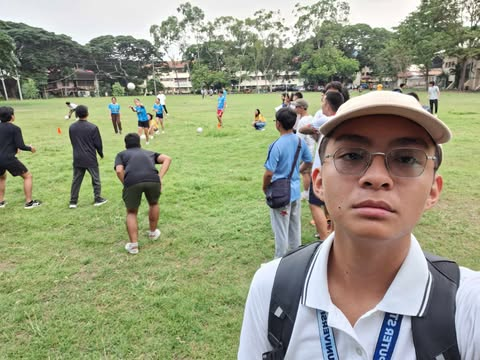

Silliverse: All-University Acquaintance Party
Aug 19, 2024 | 7:00 PM By: Silliman University Student Government (1 point)
The Siliverse: All-University Acquaintance Party was a party that included the opening of Hibalag grounds and also hosted a bini-themed performance. This was on Aug 19, 2024 at 7:00PM on the Hibalag grounds or the Ravello ballfield. This was an Acquaintance Party that was open for all the departments in the university. This was my first time at Hibalag.
I had no idea what to expect as this was my first time in Hibalag, but I still enjoyed the event and the venue. I was surprised at the dedication of the students to make this possible. The efforts and the performance was spectacular and I felt awestruck at the quality of the event. The event impacted my impressions on the school as it was very welcoming and entertaining. It felt like home even though it was my first time in Hibalag. I liked the experience as it was amazing and made me feel included in the event. It was satisfying that the level of dedication that the school has for these types of events made me feel like I belong to this type of environment.
It affected my view on this school as a dedicated and well-sophisticated school that meets my expectations. It also made me feel welcomed and at home during the Acquaintance party. I learned that I was a part of this school during the event programs. In short It was fun and engaging, the culture in Silliman is truly amazing. I would join these types of events in the near future if given the chance as it was an experience worth experiencing. The benefits of this event is that it gives a celebration to get to know the school and its culture better.
Because of this activity, I am a proud Sillimanian who acknowledges the culture in Silliman University and its importance. It made me realize the dedication and quality this school provides. The event made me feel at home and a part of this school.

Palayag 2024: Freshie Walk
Aug 16, 2024 | 1:00 PM By: Silliman University Student Government (1 point)
The Palayag 2024: Freshie Walk was an event to introduce the different departments of the university. It includes a small parade from the Ravello ballfield to the amphitheater and a chant to be recited in front. This event was held mostly at the amphitheater and started at 1:00 PM on August 16, 2024. We were participants since we were in the crowd among the CCS Students.
I expected the freshie walk to be a quick introduction of campus locations like a mini tour. Unfortunately my expectations were not met. It was only a short work towards the ball field and had a cheer and dance afterwards. It surprised me that it was not a tour because most of the seniors told me that it was a tour. I still had fun at the event getting to know more people and genuinely having a fun time during the event. I still liked the event since we had a little cheer and dance during the walk which was exciting.
The event impacted my worldview, getting inspired by the dedication of students and their departments. I learned to be proud and committed to my department. By completing my course and staying enthusiastic on whatever comes my way. To stay involved I would join events hosted by my department. The benefits of this event was to show the culture of Silliman during the first few weeks of starting classes. This is to show the dedication and drive of students from Silliman University.
Because of this activity, I am more connected to my peers and inspired at my school and should stay being dedicated. I also learned more about Silliman during this time and also learnt about different departments that were being offered.
Sillimusika 2024
Aug 24, 2024 | 7:00 PM By: Silliman University Student Government (2 points)
Sillimusika event is a music festival where local artists and famous artists visit Silliman University to perform in celebration of Hibalag or Silliman University’s Founders day. Our time in preparing for the event until the end of the event was at 1:00PM to 11:00PM. This was held at the Ravello Field where the hibalag booths were set up. Artists like Lola Amour, Lomboys, and even students from the university come to perform on the big stage. We were assigned as a working committee under the SUSG Infomedia Committee. Me and my team were assigned to take videos and photos of the artist and crowd and later upload them to the main SUSG facebook page to gain traction.
I learned where to shoot good angles for the artist, how to engage the crowd to make a better shot, and I learned how to use a gimbal that my friend owns. My expectations as a logistics head was only to help in setting up cameras and equipment which I have to be honest was kinda boring. I did not expect that my friend Gerald would introduce me and let me try shooting still shots for the artist and crowd. I was surprised that an ordinary person got access to the concert free of charge while also being at the front of the stage. I was thankful for Gerald for letting me try and experience videography and photography.
My experience affected my world view by teaching me to go out of my comfort zone and try new things and new roles. From learning where to shoot amazing angles and to engage the crowd for a shot was game changing for me. From now on I can apply this learning by continuing to join the SUSG Infomedia Committee and take new roles as a videographer if given the equipment and try out new experiences. The benefits of this experience is that I got to learn new technical skills, videography, photography, crowd engagement, and equipment usage. Not only that but I was also brought into the front of the stage to film whilst enjoying the show.
Because of this activity, I am more confident in taking new roles and oppurtunities especially in videography and photography. Since I also have friends to guide me to start my new passion or hobby. I am also more comfortable working with a team since that would be a crucial skill to learn in preparation for my future endeavors.
Parada Sillimaniana 2024
Aug 26, 2024 | 3:00 PM By: Silliman University Student Government (1 point)
The Parada Sillimaniana event was held in celebration of Silliman University’s Founders day. This was on August 26, 2024 3:00PM on the Filomeno Cimafranca Ballfield. This was a parade ranging from the school and around town then towards the Cimafranca ballfield. The event was filled with presentations and performances and filled with students and alumni. My role for this event was a participant.
I learned the culture of Silliman during the founders week. It showed the dedication and love for Silliman even the alumni made the time to get together during this time. As expected the parade was fun and enjoyable while the event showed dedication and quality to make this event the possibly the best it could be. It was surprising that alumni of over 50 years ago still made the effort to show love to Silliman. The experience filled my appreciation for the rich history and culture of Silliman. During this event I have shown my commitment and love by participating in this event.
The experience has deepened my sense of pride and belonging to the Silliman community. I learned the importance of preserving the culture and traditions of this school. I will continue my involvement in Silliman by participating in future events and staying connected to fellow schoolmates. Participating in this event was beneficial that it allowed me to connect with batchmates and learn more about the tradition of Silliman during founders day.
Because of this activity, I am more engaged with the culture and tradition of Silliman University. I am also more committed to playing my part in Silliman and staying connected for future events.
Dal-uy Festival
Aug 31, 2024 | 5:00 PM By: Foundation University (1 point)
The Foundation University’s Dal-uy Festival was held at Pantawan, Rizal Boulevard at 5:00 PM. This lasted until night time where the floating lanterns were set out on the sea. This was in celebration of Foundation University’s Founders day as it has a tradition to let out floating lanterns unto the sea. Written on the paper of the lanterns were the goals, dreams, and wishes of the students. I participated as a spectator together with my friends, one of them was an alumni.
Initially, I expected the festival to be an ordinary cultural festival with performances and art. But after going around for sometime together with my friends it changed as I got immersed by the stories and traditions of this event. A Lot of students from Foundation University were also present. Looking at their performance, It was filled with dedication and joy. I was surprised by the dedication and enthusiasm to preserve the tradition of the university. My values I enhanced during this event was cultural appreciation, community involvement, and creativity.
This experience broadened my worldview by seeing the cultural performances and traditions while also the dedication of the students. Applying these knowledge by being open to cultural events as they support initiatives that celebrate diversity. I will look forward to next year’s Dal-uy festival as I enjoyed this year’s event. This event fostered the cultural pride of people which strengthened the bond of people.
Because of this activity, I am more open to the culture and tradition of schools and it inspired me to participate in more cultural activities in the future.

CCS Acquaintance Party: Binary Echoes of the Shadows
Sept 28, 2024 | 2:00 PM By: Confederates Student Council (2 points)
The CCS Acquaintance party is an event hosted by the Confederates Student Council on September 28, 2024 6:00PM located on the Silliman University Elementary School Basketball court. The objective of this event was to get to know other students from the same college. The theme of the event was “Binary Echoes of the Shadows” and had to wear mafia themed outfits. My role during this event was a Working Committee and had to come as early as 2:00PM to set up decorations to hard to reach places, mostly banners, props, and the photobooth.
I learned the process of an event right before it starts. My expectations for the event was a fun and engaging activity where I could meet new people and gain new friends. My expectations were true and I had a blast. I was surprised that a well known DJ was able to play for our Acquaintance party which was DJ Shinji Ueda and that was amazing. This event reinforced my belief in the importance of socializing. The satisfaction of the event going smoothly was a relief and something to be proud of. The values of teamwork and dedication was evident during this activity.
This event solidified the belief in the power of teamwork and contribution. I learned the value of planning and effective time management which I could apply to my future endeavors. I would absolutely take the chance in this event again. To experience socializing and helping make this event possible was quite the experience and would love to do it again. The benefits of this activity was that I made new friends and met new people while also feeling good helping to make this event go smoothly.
Because of this activity, I am more confident in my ability to socialize and meet new people. I am also more confident in volunteering to help in events.